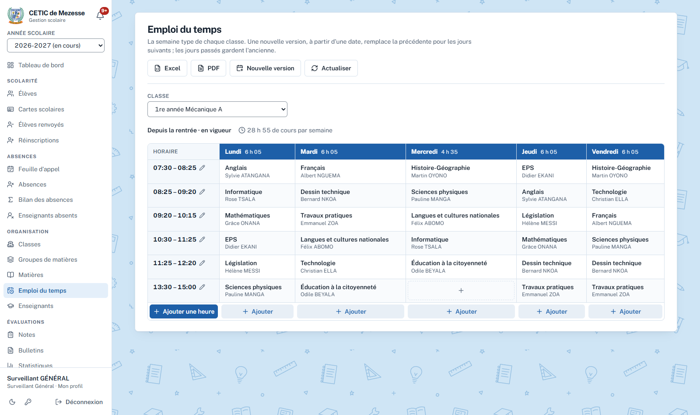
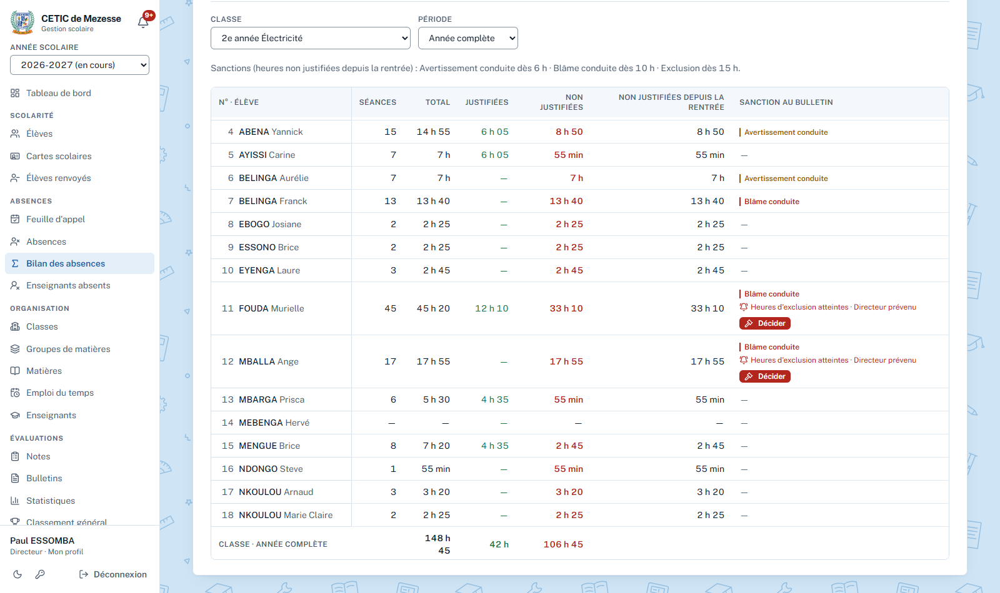
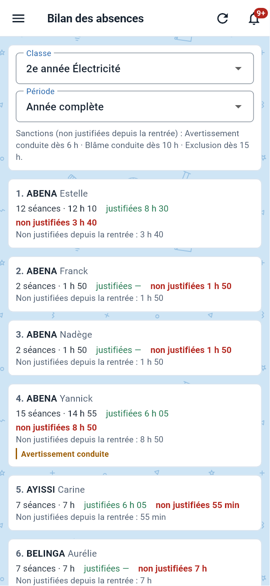
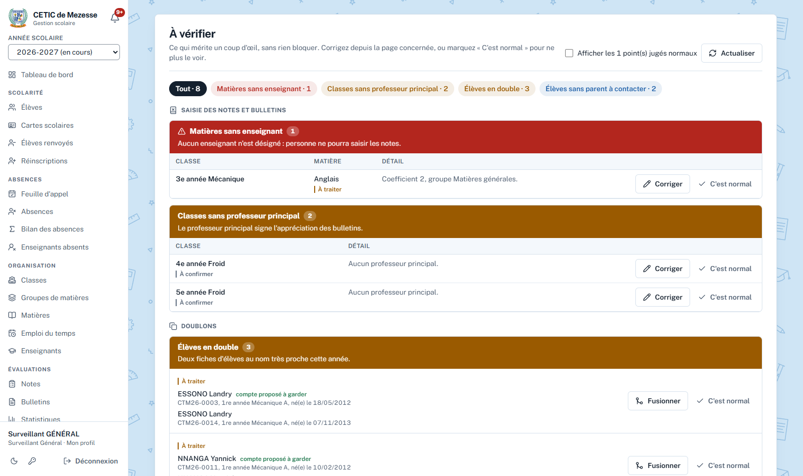
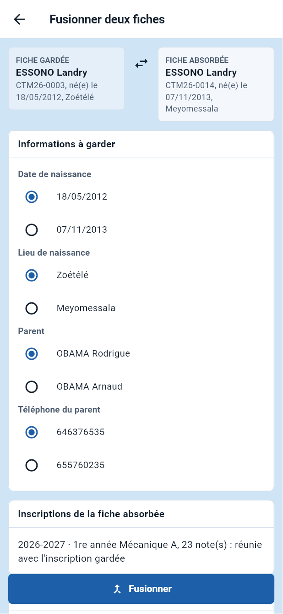

Cette mise à jour apporte le suivi des absences, l'export de presque toutes les pages, la page « À vérifier » avec les fusions de doublons, les notifications sur le téléphone et dans le navigateur, et quelques améliorations du quotidien. Ce guide les présente dans l'ordre où vous les rencontrerez ; le détail est dans le Manuel des absences et dans le manuel de votre profil.
Nouveauté
Pour qui
Où
Emploi du temps, feuille d'appel, justifications
Surveillant Général
Organisation → Emploi du temps ; menu Absences
Sanctions et décisions d'exclusion
SG (seuils) · Directeur (décisions)
Paramètres ; Bilan des absences ou Élèves
Exports Excel et PDF
Direction
En haut des pages (mobile : menu Exporter)
À vérifier, doublons, fusions
Direction
Administration → À vérifier
Supprimer la photo d'un élève
Direction
Fiche de l'élève
Notifications sur le téléphone et le navigateur
Tous
Proposées à la connexion
Un seul premier, non classés, délibération, bilan annuel
Direction (réglages) · tous (résultats)
Paramètres ; bulletins, notes, classement
Bon à savoir. Le chef d'établissement est le Directeur, ou la Directrice. Les cours ont lieu du lundi au vendredi : l'application ne propose ni cours ni appel le samedi et le dimanche.
1. Les absences : la mise en place (Surveillant Général)
Le suivi des absences s'appuie sur l'organisation de l'année : les classes, leurs matières (avec leur professeur) et leurs élèves doivent exister.
1
Les sanctions (Administration → Paramètres, carte « Sanctions pour absences non justifiées »). Indiquez à partir de combien d'heures non justifiées, cumulées depuis la rentrée, s'appliquent l'Avertissement conduite, le Blâme conduite et l'Exclusion, puis Enregistrer. Une case vide : la sanction n'est pas utilisée.
2
L'emploi du temps de chaque classe (Organisation → Emploi du temps), en tableau : les horaires en lignes, les jours en colonnes. Choisissez la classe, puis :
Ajouter une heure pour chaque ligne de la journée (07:30 – 08:25, 08:25 – 09:20…) ;
le + de chaque case pour y mettre la matière ;
le crayon d'un horaire pour le changer sur toute la ligne ;
PDF pour l'imprimer et l'afficher en classe (ou Excel).
Une alerte rouge signale un enseignant attendu dans deux classes à la même heure.

Figure 1 — L'emploi du temps d'une classe · site à gauche, application mobile à droite
2. Les absences au quotidien
1
Faire l'appel (Absences → Feuille d'appel). Choisissez la classe : le jour est déjà le bon. Tout le monde est présent : cliquez seulement les cases des absents (un clic sur le nom marque toute la journée). Ce que vous cochez reste sur l'appareil, même sans réseau, jusqu'à Enregistrer l'appel. Une flèche signale les séances cachées à droite.
2
Un enseignant absent : cliquez sur l'en-tête de sa séance (matière ou nom) et confirmez. Pour un remplaçant ou un cours annulé : menu ⋮ de la séance → Modifier la séance… ; avec un remplaçant, l'enseignant prévu n'est pas compté absent.
3
Les justificatifs (Absences → Absences, affichage Par élève). Cochez les absences de l'élève, puis Justifier : le motif, la date de réception et la photo ou le PDF du justificatif. L'affichage Par jour garde la date visible en haut en faisant défiler.
4
Le bilan (Absences → Bilan des absences) : pour une classe et une période, les heures de chaque élève et la sanction que portera le bulletin. Le bloc « Discipline » du bulletin se remplit tout seul.
5
Les enseignants absents (Absences → Enseignants absents) : les séances non assurées, avec un filtre par période et par enseignant.
Figure 2 — La feuille d'appel · site à gauche, application mobile à droite
Le numéro d'ordre. Chaque élève a un numéro dans sa classe (1, 2, 3… dans l'ordre alphabétique), le même sur tous les écrans : Élèves, Feuille d'appel, Absences, Bilan, Notes. C'est souvent ce numéro qu'on relève en classe.
3. Les exclusions : la décision du Directeur
1
Être prévenu : la notification Heures d'exclusion atteintes arrive une fois par élève et mène au bilan de sa classe. La colonne Sanction de la liste des Élèves, avec son filtre, montre aussi qui est concerné.
2
Décider : le bouton rouge Décider (Bilan des absences ou Élèves) propose trois choix.
Exclusion temporaire : le nombre de jours, libre, et le premier jour ; l'élève revient de lui-même.
Exclusion définitive : pour toujours ; l'élève passe parmi les Élèves renvoyés et ne peut plus être réinscrit.
Sursis : l'élève reste en classe, avec le blâme sur le bulletin.
Le Surveillant Général en est prévenu. En cas d'erreur : Annuler la décision, sous la sanction de l'élève.


Figure 3 — Le bilan des absences, avec « Décider » · site à gauche, application mobile à droite
4. Imprimer et exporter
Les boutons Excel et PDF, en haut des pages, exportent ce que la page affiche, filtres et tri compris. Le PDF porte l'en-tête officiel du CETIC, avec les filtres sous le titre ; un tableau large passe en paysage. Sur le mobile, c'est le menu Exporter.
Page
Ce que contient le fichier
Feuille d'appel
La feuille du jour : A (absent), J (justifiée), absents par séance. Pas encore faite : vide, à remplir au crayon en classe.
Bilan des absences
Les heures de chaque élève, la sanction au bulletin, la place du visa du SG.
Les tableaux de la page ; les graphiques sous forme de chiffres.
Figure 4 — Une feuille d'appel exportée en PDF
5. À vérifier, doublons et fusions
Menu Administration → À vérifier (Surveillant Général et Directeur) : ce qui mérite un coup d'œil, sans rien bloquer, rangé par urgence.
Saisie des notes et bulletins : matières sans enseignant ou confiées à un compte désactivé, classes sans professeur principal.
Doublons : enseignants, élèves ou matières qui se ressemblent.
Fiches d'élèves : date de naissance au 1er janvier (souvent approximative), élève sans parent à contacter.

Figure 5 — La page À vérifier · site à gauche, application mobile à droite
Chaque point propose :
1
Corriger : ouvre la page où le corriger (la matière, la classe, la fiche).
2
Fusionner (doublons) : deux fiches de la même personne n'en font plus qu'une. Choisissez, ligne par ligne, les informations à garder ; les notes, absences et inscriptions passent sur la fiche gardée. Le SG fusionne les enseignants, la direction les élèves. Le Directeur peut défaire une fusion en la désapprouvant.
3
C'est normal : retire le point de la liste, après confirmation. Afficher les points jugés normaux les fait réapparaître ; Signaler de nouveau les remet dans la liste.

Figure 6 — Fusionner deux fiches d'élève · site à gauche, application mobile à droite
Les doublons évités à la saisie. Avant de créer ou de renommer un enseignant, un élève, une matière ou une classe, l'application montre les fiches qui ressemblent. Elle ne refuse jamais : s'il s'agit bien d'une autre personne, Enregistrer quand même. Un formulaire envoyé deux fois (double clic, réseau lent) n'est enregistré qu'une seule fois.
6. Les photos des élèves
Sur la fiche de l'élève, Supprimer la photo retire une photo erronée, après confirmation : elle disparaît de la fiche, des bulletins et de la carte scolaire. Sur le mobile, touchez la photo, puis Supprimer la photo. Une suppression faite par le SG peut être défaite par le Directeur (désapprobation) : la photo revient.
Figure 7 — Supprimer la photo d'un élève, avec confirmation
Sans photo, la carte scolaire ne peut pas être imprimée : ajoutez la bonne photo avec Changer la photo.
7. Les notifications sur le téléphone et le navigateur
Les notifications de la cloche (ouverture de la saisie des notes, décisions, heures d'exclusion atteintes…) arrivent aussi sur le téléphone et dans le navigateur, même application ou onglet fermé.
1
Les activer : à la connexion, l'application propose « Recevoir les notifications ? » (mobile : Autoriser) ou « Recevoir les notifications sur cet appareil ? » (site : Activer). Plus tard repousse la question.
2
Les toucher ouvre directement la page concernée.
3
Se déconnecter : l'appareil ne reçoit plus les notifications de votre compte, même si la session a expiré ou si le réseau manquait (la demande repart dès que le réseau revient). Sur un téléphone ou un ordinateur partagé, la personne suivante ne voit donc pas vos notifications.
8. Le classement et la fin d'année
Un seul premier. Les rangs se calculent sur les moyennes arrondies au centième. Des élèves ex æquo partagent leur rang, sauf à la première place : elle revient à un seul élève, départagé selon les critères rangés par importance dans les Paramètres (moyenne d'un groupe de matières, comme les matières professionnelles ; discipline, c'est-à-dire le moins d'heures d'absence non justifiées de la période ; ordre alphabétique), puis par tirage au sort. Les autres ex æquo de la première place partagent le 2e rang.
Les matières non composées (sur une séquence) : moins d'un tiers des matières évaluées composées, l'élève n'est pas classé (« NC ») ; entre un tiers et deux tiers, les matières manquantes valent 0 et leur coefficient compte ; plus de deux tiers, elles sont ignorées (note vide, coefficient non compté). Les deux seuils se règlent dans les Paramètres.
Le trimestre se calcule sur les séquences où l'élève est classé : une seule note dans une matière devient sa note du trimestre ; non classé à une séquence et classé à l'autre, cette dernière devient son trimestre ; non classé aux deux, il n'est pas classé au trimestre.
L'année est la moyenne des trimestres classés ; sans trimestre classé, l'élève n'est pas classé.
La réussite : 10 de moyenne sur les séquences et les trimestres. Sur l'année, la moyenne de délibération (par exemple 9,00), si elle est réglée, permet le passage : « Admis(e) après délibération ».
Ces règles se règlent dans Administration → Paramètres, carte Résultats, classement et délibération. Le tableau d'honneur peut aussi être refusé au-delà d'un nombre d'heures d'absence non justifiées sur la période.
Figure 8 — Résultats, classement et délibération
Le bulletin de fin d'année. Le bulletin du 3e trimestre porte le bilan annuel (moyenne et rang de l'année) et la décision du conseil de classe, calculée d'après la moyenne annuelle : « Admis(e) en classe supérieure » (10 et plus), « Admis(e) après délibération » (à partir de la moyenne de délibération) ou « Redouble ».
9. Ce qu'il faut avant chaque action
Pour…
Il faut d'abord…
Où
Saisir l'emploi du temps
La classe et ses matières, avec leur professeur
Organisation → Emploi du temps
Faire l'appel
L'emploi du temps de la classe, un jour de classe passé ou aujourd'hui
Absences → Feuille d'appel
Justifier une absence
L'appel enregistré, et les motifs
Absences → Absences
Calculer les sanctions
Les heures des sanctions
Paramètres
Décider d'une exclusion
L'élève a atteint les heures d'exclusion (compte Directeur)